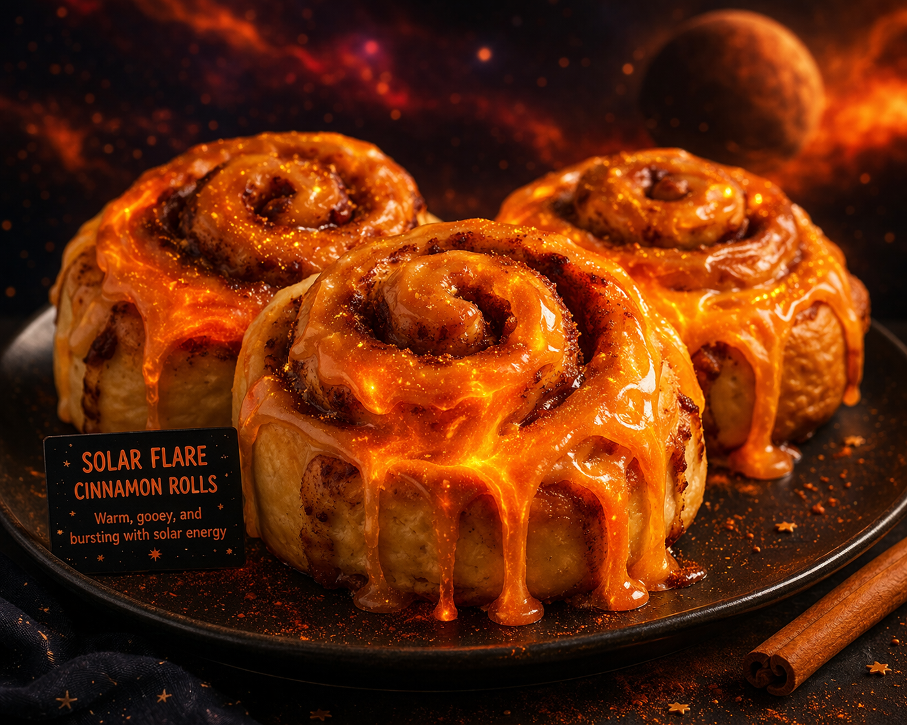
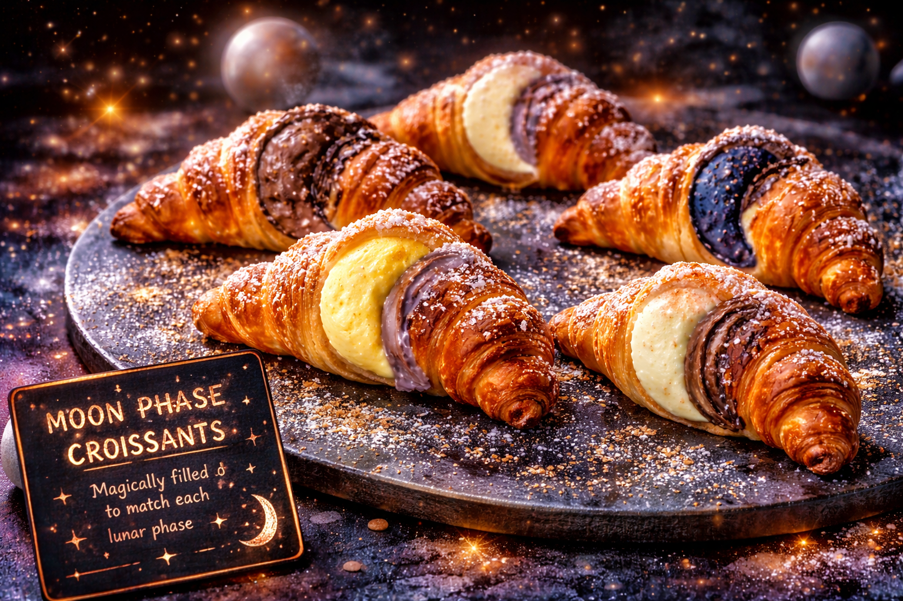
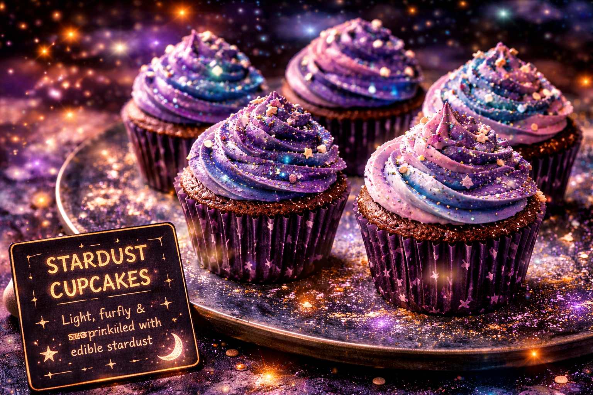
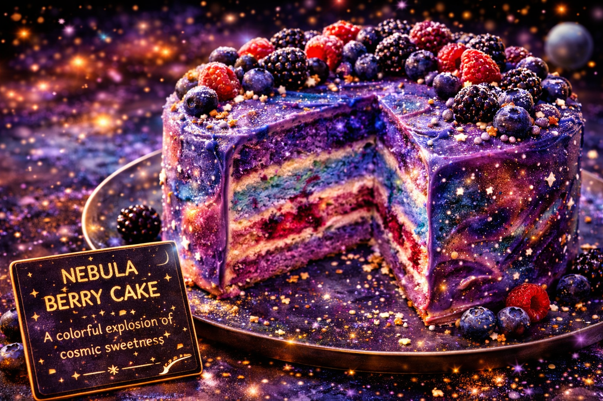

⭐ Extra Special Treats⭐
✨ Signature Cosmic Specials ✨
At Cosmic Coffee, our specials are inspired by the beauty and mystery of space. Each treat is designed to feel magical, colorful, and a little out of this world. Our menu features unique creations like Solar Flare Cinnamon Rolls, Moon Phase Croissants, Stardust Cupcakes, and the Nebula Berry Cake. These desserts are made to stand out with glowing colors, soft textures, and creative designs that match the cosmic theme of the café.
Every special is carefully crafted to give customers a fun and memorable experience. The Solar Flare Cinnamon Rolls are warm, gooey, and topped with a bright orange glaze that looks like molten sunlight. The Moon Phase Croissants change flavors depending on the phase of the moon, while the Stardust Cupcakes are light, fluffy, and covered in sparkling edible glitter. The Nebula Berry Cake brings everything together with layers of pink, purple, and blue, creating a colorful dessert that looks like a galaxy. These treats are perfect for anyone looking to try something different and enjoy a little bit of magic with their coffee.



